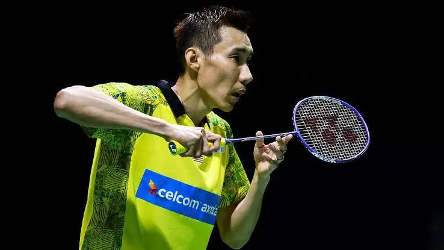

Hér eru nokkrir af þekktustu badmintonleikurum heims, bæði goðsagnir og leikmenn sem eru í fremstu röð í dag.

Lee Chong Wei frá Malasíu.
Lee Chong Wei
Lee Chong Wei var einn fremsti badmintonmaður Malasíu. Hann var lengi í fremstu röð heimsins og þekktur fyrir mikla snerpu og nákvæmni.
Lee Chong Wei vann margar stórar keppnir á ferlinum og var þrisvar í röð í silfurliði á Ólympíuleikum. Hann varð einnig heimsmeistari í stigakeppni BWF og var lengi í efsta sæti heimslistans.
Viktor Axelsen
Viktor Axelsen er danskur badmintonmaður og einn þekktasti leikmaður samtímans. Hann hefur unnið bæði Ólympíugull og heimsmeistaratitil í einliðaleik.
Axelsen er hávaxinn og notar hæð sína vel á vellinum. Hann er þekktur fyrir öflug högg, góða stjórn á boltanum og sterkan varnarleik.
Carolina Marín
Carolina Marín frá Spáni er ein þekktasta badmintonkona Evrópu. Hún hefur unnið Ólympíugull og marga heimsmeistaratitla í einliðaleik.
Marín er þekkt fyrir mikla ákefð og árásargjarnan leik. Hún er einnig þekkt fyrir að hvetja sjálfa sig mikið í leikjum og gefast aldrei upp.
Tai Tzu-ying
Tai Tzu-ying frá Taívan hefur verið meðal bestu einliðaleikskvenna heims. Hún er sérstaklega þekkt fyrir mjög góða boltatækni og óvænt högg.
Leikstíll hennar hefur vakið mikla athygli vegna þess hversu auðveldlega hún getur breytt stefnu og hraða boltans. Hún hefur einnig verið lengi í efsta sæti heimslistans.